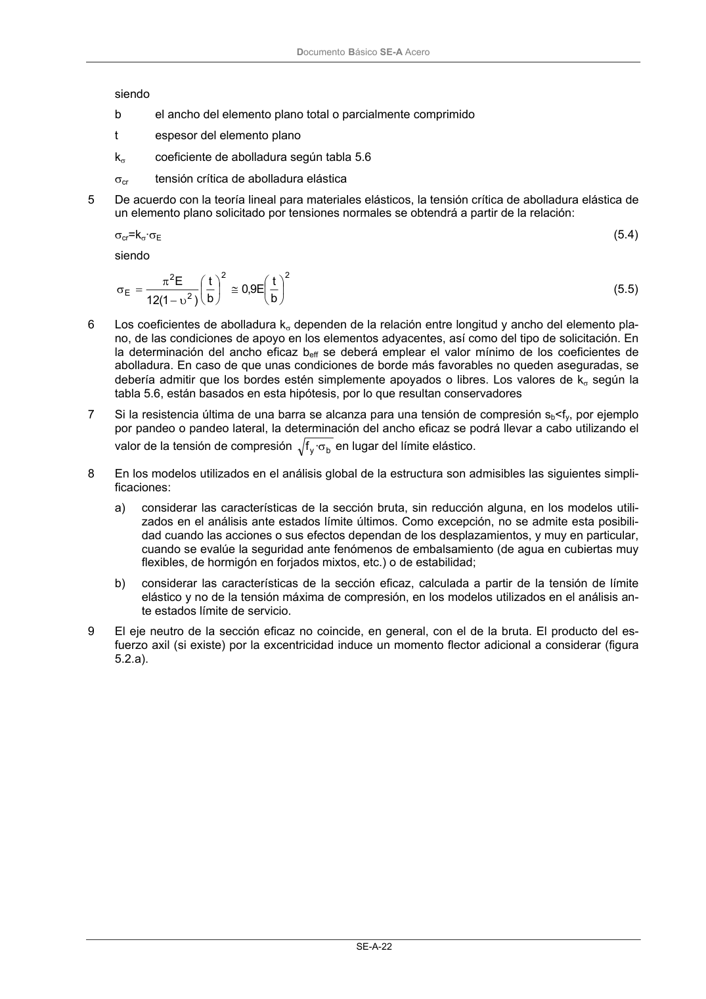

DB-SE-A Acero · edición 2007-10-23 · capa oficial
Documento DB-SE-A-oficial · SHA-256 del PDF 9ed9ea694aabfbda3bfbbef40dfe9223fde05d13c35bc2ba9751e5a96a22a64f
Página física 24 de 168.
Copia fiel del PDF fuente · Fuente oficial
Ficha de la disposición en la fuente oficial
Formato: Texto de la página (Markdown)
Documento Básico SE-A Acero SE-A-22 siendo b el ancho del elemento plano total o parcialmente comprimido t espesor del elemento plano kσ coeficiente de abolladura según tabla 5.6 σcr tensión crítica de abolladura elástica 5 De acuerdo con la teoría lineal para materiales elásticos, la tensión crítica de abolladura elástica de un elemento plano solicitado por tensiones normales se obtendrá a partir de la relación: σcr=kσ·σE (5.4) siendo 2 2 2 2 E b t E 9,0 b t ) 1 ( 12 E ≅ υ − π = σ (5.5) 6 Los coeficientes de abolladura kσ dependen de la relación entre longitud y ancho del elemento pla- no, de las condiciones de apoyo en los elementos adyacentes, así como del tipo de solicitación. En la determinación del ancho eficaz beff se deberá emplear el valor mínimo de los coeficientes de abolladura. En caso de que unas condiciones de borde más favorables no queden aseguradas, se debería admitir que los bordes estén simplemente apoyados o libres. Los valores de kσ según la tabla 5.6, están basados en esta hipótesis, por lo que resultan conservadores 7 Si la resistencia última de una barra se alcanza para una tensión de compresión sb<fy, por ejemplo por pandeo o pandeo lateral, la determinación del ancho eficaz se podrá llevar a cabo utilizando el valor de la tensión de compresión b y· f σ en lugar del límite elástico. 8 En los modelos utilizados en el análisis global de la estructura son admisibles las siguientes simpli- ficaciones: a) considerar las características de la sección bruta, sin reducción alguna, en los modelos utili- zados en el análisis ante estados límite últimos. Como excepción, no se admite esta posibili- dad cuando las acciones o sus efectos dependan de los desplazamientos, y muy en particular, cuando se evalúe la seguridad ante fenómenos de embalsamiento (de agua en cubiertas muy flexibles, de hormigón en forjados mixtos, etc.) o de estabilidad; b) considerar las características de la sección eficaz, calculada a partir de la tensión de límite elástico y no de la tensión máxima de compresión, en los modelos utilizados en el análisis an- te estados límite de servicio. 9 El eje neutro de la sección eficaz no coincide, en general, con el de la bruta. El producto del es- fuerzo axil (si existe) por la excentricidad induce un momento flector adicional a considerar (figura 5.2.a).
